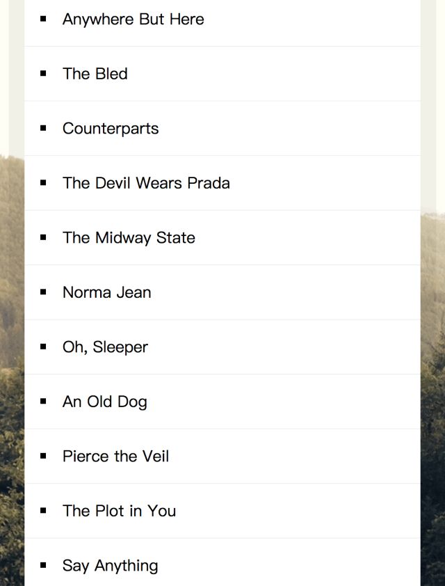

【JS30】Sort Without Articles
17 — Sort Without Articles

主題
介紹如何將陣列在排除部分文字的情況下排序。
步驟
Step1. 建立篩選的function
使用replace搭配正規表示式來將包含了a, the, an開頭的文字替換為空白。
1 | function strip(bandName) { |
Step2. 對目標陣列進行篩選與排序
這裡將原本的寫法與簡寫放在一起，可以發現整體簡潔不少。
1 | //原本的寫法 |
Step3. 把排序完的渲染到HTML中
使用map與join來組成<li>元素放置
1 | document.querySelector('#bands').innerHTML = |
使用join(”)修改連結符號為空白, 否則原先陣列的分隔符號是,也會一併渲染在html中。
探索
這邊做了下match,includes,與正規表達的比較
match()
1 | string.match (regexp) |
比對字串與規則運算式，然後傳回包含該搜尋結果的陣列。
結果會以陣列顯示
1 | let str = "azcafAJAC"; |
輸出結果 ： result = [a]
1 | let str = "azcafAJAC"; |
輸出結果 ： result = [a,c,a]
includes
1 | arr.includes(searchElement[, fromIndex]) |
傳回布林值，指出字串物件中是否包含傳入的字串。
1 | // Returns true |
- Post title：【JS30】Sort Without Articles
- Post author：Neil Yang
- Create time：2019-05-24 00:00:00
- Post link：https://des86532.github.io/2019/05/24/JS30/JS30-sort-without-articles/
- Copyright Notice：All articles in this blog are licensed under BY-NC-SA unless stating additionally.